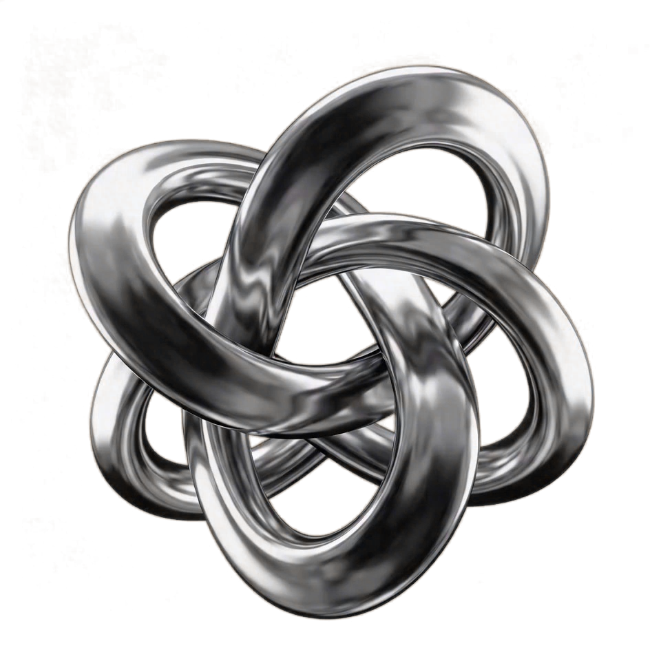
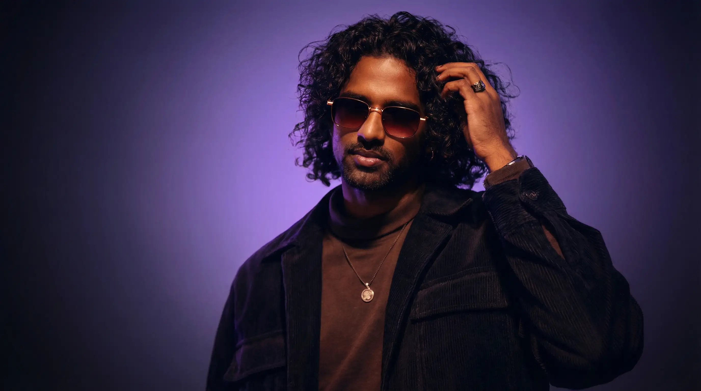

Creating cinematic edits, motion systems, and AI-driven visuals for modern digital experiences.
View Projects
Creating cinematic edits, motion systems, and AI-driven visuals for modern digital experiences.
View Projects
Crafting cinematic edits, motion-driven visuals, and digital experiences
designed to engage, resonate, and leave an impact.
VFX | Motion | Video Editing
View ProjectGenerative AI | Direction | Video Editing
View ProjectOver 6+ years, I’ve worked across video editing, motion design, branding, and digital product design, crafting experiences that balance rhythm, emotion, usability, and visual clarity. Today, I combine cinematic editing, motion systems, product thinking, and AI-assisted workflows to create modern digital experiences built to connect and resonate.

Experience across motion design, video production, branding,
AI workflows, and on-set VFX coordination.
May 2019 — Present
Entri software PVT LTD
Led motion and visual system execution across educational and marketing products, ensuring consistency, scalability, and high production quality.
March 2018 — April 2019
CrabWrist Technologies
Designed motion and explainer systems to simplify complex information and improve content clarity across digital platforms.
Currently exploring creative opportunities and collaborative work across video editing, motion design, AI-driven visuals, and branding.